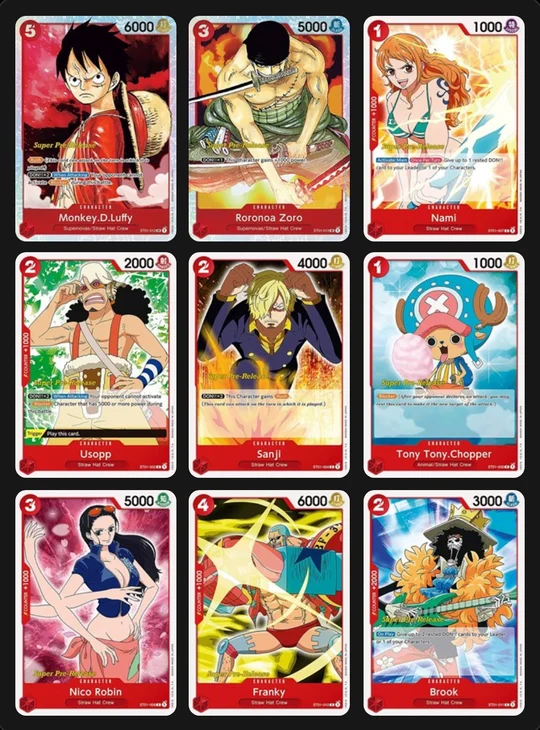

One Piece binder page
The Straw Hat binder page

The crew, in the order they joined
Read the page left to right, top to bottom, and it tells the story so far: the East Blue first, then the Grand Line.
| Straw Hat | Joined | |
|---|---|---|
| 1 | Monkey D. Luffy | Captain |
| 2 | Roronoa Zoro | East Blue |
| 3 | Nami | East Blue |
| 4 | Usopp | East Blue |
| 5 | Sanji | East Blue |
| 6 | Tony Tony Chopper | Drum Island |
| 7 | Nico Robin | After Alabasta |
| 8 | Franky | Water 7 |
| 9 | Brook | Thriller Bark |
| Page two | Jinbe | Wano |
Three layouts, compared
1. Joining order. The page pictured above. Nine pockets, nine Straw Hats, and Jinbe starts the next page.
2. The captain's spread. Give Luffy a page of his own, nine Luffy cards, and put the nine crewmates from Zoro to Jinbe on the facing page. Open the binder and the captain looks across at his whole crew, with nobody left over.
The crew page of the captain's spread: Jinbe takes the last pocket.
3. One Straw Hat, nine cards. Pick your favourite crewmate and fill a page with nine of their cards. Every Straw Hat has cards in many sets, so any crewmate's page fills easily.
| Layout | Pages | Best for |
|---|---|---|
| Joining order | 1, Jinbe on page two | The crew's story at a glance |
| Captain's spread | 2 facing pages | The whole crew of ten, nobody left over |
| One Straw Hat | 1 per crewmate | Your favourite, nine times |
One deck, the whole crew
The Straw Hat Crew starter deck, ST-01, has a card for all ten Straw Hats, so one deck fills the page with matching frames. The page at the top of this guide uses its cards. To match a newer look instead, keep the page to one set: the builder lists the set next to every card, so you can see which sets have the crewmates you want.
Try it before you sleeve
Moving nine cards around a real page is slow, and every move risks a scuff. Try the order on screen first, as many times as you like.
- Open the free page builder. No account needed.
- Type a name, such as Luffy. The builder lists the One Piece cards with that name and the set each one comes from. Add the set, such as Luffy ST-01, to see only that set's cards.
- Tap one card for each Straw Hat, in the order you want them. Pockets fill in the order you tap. For the page above: Luffy, Zoro, Nami, Usopp, Sanji, Chopper, Robin, Franky, Brook.
- Tap See page. Tap a card to take it out, then add another, until the page looks right.
- Keep the page with a free account, then sleeve the real cards in the same order.
Questions
How many Straw Hats are there?
Ten: Luffy and nine crewmates. Zoro, Nami, Usopp and Sanji joined in the East Blue, then Chopper, Robin, Franky and Brook, and Jinbe joined last, in Wano.
Which One Piece set has the whole Straw Hat crew?
The Straw Hat Crew starter deck, ST-01, has all ten: Luffy, Zoro, Nami, Usopp, Sanji, Chopper, Robin, Franky, Brook and Jinbe. The page pictured in this guide uses its cards.
Where does Jinbe go if the page only has nine pockets?
Either first on page two, or give Luffy his own page: the nine crewmates from Zoro to Jinbe then fill the facing page exactly.
Can I plan a One Piece page in the same builder as Pokémon?
Yes. Type a name such as Luffy or Chopper and the builder lists One Piece cards with the set each one comes from.
Is the page builder free?
Yes. Planning a page needs no account. Keeping it makes a free account, which never asks for payment details.
More guides: One Piece card scanner · Binder page planner · Favorite Pokémon binder · Organize your binder · Binder theme ideas
One Piece is a trademark of its owners. Beltstra is an independent app and is not affiliated with or endorsed by them.